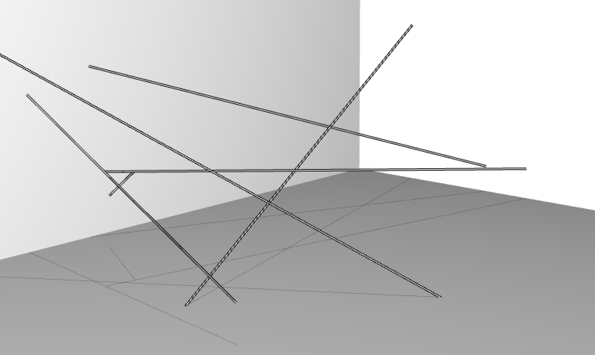

Case Study : Line Segments Space
 Line Segments Space
Line Segments Space
==please format this==
- Kimchi and Chips
- Mimi Son, Elliot Woods
- Installation
- Seoul, 2013
- 4x3x7 meters (WxHxD)
- Digital Emulsion, Nylon String
Foreward
Line Segments Space is an artwork created by studio Kimchi and Chips (Mimi Son, Elliot Woods), and is the third installation within a series of works titled 'Digital Emulsion', preceded by Lit Tree (2011) and Assembly (2012). The pricipal technician for this project is me, Elliot, the voice of this chapter.
This chapter will discuss some of the technical details of the project to varying levels of detail. Before continuing, I hope that you will first take a little time to view the work in a non-technical context and watch the video on our website at http://kimchiandchips.com/#LSS .
The work contains a number of technical solutions, the principal one being an implementation of the Digital Emulsion technique. Others include a custom CAD application, generative 'brushes' for volumetric content, optical layout of the room and equipment, sound control and spatialisation, and calibration by a team of client computers. This chapter touches on a few of these challenges.
==perhaps this should be a list of what is actually in the chapter== [BD: The chapter is short enough that I don't think that this is needed]
Artist statement
An architectural web of threads spans a gallery space. It hangs abstract and undefined, a set of thin positive elements segmenting the dark negative space between. Dynamic imaginary forms are articulated into physical volume by the material of this thread, and the semi-material of the light. The visual gravity of the filaments occupying the space between.
A 2D canvas is reduced from a surface piece into a line segment, but then constructed into another dimension, a volume. Light creates contrast and order on the lines to articulate digital matter. Digital forms inhabit the interconnected boundaries of space, moulding visual mass,
The artists reference Picasso’s light painting, and Reticuláreas of Gego who’s work offers a contemplation of the material and immaterial, time and space, origin and encounter and art and technology.
Kimchi and Chips create technology which paints into different dimensions, bringing new canvases and expanding the possibilities for artists to articulate form. These technologies become a corpus of code, offered without restriction on the internet. Their code is adopted by other artists and corporations, spreading values and ideas implicit with the artists’ work into shared cultural idea space. Line Segments Space lives both as a dynamic gallery object, and as an encapsulation of the techniques as new computer code and tools on the internet.
[BD: This artist statement may be better at the top. It feels a bit weird to go from talking about the work in the forward, to a brief technical overview, and then an artist statement.]
Digital Emulsion
Digital Emulsion (or Re-projection Scanning) is a technique which combines 3D scanning with projection mapping in order to create new canvases for visual expression. Line Segments Space employs Digital Emulsion to accurately aim light from projectors onto individual threads, whilst also determining the 3D geometry of the web.
The technique combines the use of a video projector and an imaging camera (e.g. DSLR or machine vision camera) to augment a physical object. The steps for this are generally:
- Calibrate the camera and projector (e.g. using OpenCV)
- Perform a Structured Light scan of a scene (e.g. using ofxGraycode )
- Triangulate the 3D location of every projector pixel in the scene (e.g. using ofxTriangulate )
- Render a graphical response to the scene using the triangulation data
- Project this response back onto the scene using the structured light data to perform a pixel-precise mapping between the projector and the scene.
Structured Light
Structured Light refers to a set of techniques which couple projectors with sensors to take visual and spatial readings of the physical world.
A very simple structured light technique is to project a thin white line onto a scene and to take a photo of it. Within the photo, we can see that the line kinks and bends within the cameras image as it passes over 3D features. Using some trigonometry we could perhaps calculate something about the 3D shape of the object based on the displacement of this line.
(insert photo of line projected onto object e.g. http://www.david-3d.com/gfx/slides/4.jpg) [BD: This photo illustrates Structered Light well! I would use it.]
If we took many images (e.g. a video) whilst moving the line across the whole scene, then we could recover a lot of 3D information about the scene, and make a mesh (e.g. ofMesh).
Generally for Digital Emulsion, we use a structured light technique called Graycode Structured Light. If you're interested in learning more, I suggest checking out either ofxGraycode or David laser scanner (a free to download standalone scanning app which employs structured light).
The specific advantage of using Graycode (rather than 3-phase) structured light for Digital Emulsion projects, is that it gives you accurate information of the location of the projector's pixels rather than of the camera's pixels . Folowing the Graycode scan, we can now consider that our projector's pixels are sensing the scene but are still also controllable as visible pixels, that they in fact sensor-pixels, also known as 'sexels'.
Technical solution
Constraints
The first presentation of Line Segments Space was at Seoul Art Space Gumcheon between September and October 2013, the exhibition had the following constraints:
- 1 week installation time
- 4 week run time
- Temporary room built by gallery
- Limited production budget from gallery for material and equipment costs, other costs covered by artists
System overview
 System Diagram
System Diagram
==please redraw==
Software frameworks
Generally I split processes into 2 categories:
[BD: Here, the difference between online + offline tasks is slightly muddled. Perhaps it is because of the associations with those words. Online + offline is slightly confusing. Perhaps outlining your definition for them here in more depth would be helpful.]
Online : * The task is performed with the installation hardware * Other people are likely to be involved in the process * It's best if software edits can be made quickly and freely * Edits are made whilst continuously observing the output (like a pilot manouvering a plane)
An example of an online process might be the final runtime of the installation.
Offline : * The task can be performed away from the installation hardware. * Some offline tasks may require intense computing time * Often these tasks require more concentration * Edits are made and the results are viewed asynchronously (like a chef tasting the soup)
An example of an offline process would be processing the scan data.
My personal preference is often to use openFrameworks for developing offline tasks, and to use another toolkit called VVVV for developing online processes.
Hardware
| Component | Reasoning |
|---|---|
| PC, Windows | PC's are selected for flexible graphics options and for VVVV compatability |
| GeForce GTX 680 |
Moderately strong, so good at geavy shader pipelines such as used in this project
It has 4 video outs |
| TripleHead2Go | Keeping all output in a single context (i.e, 1 'Display' in Windows) reduces rendering overhead and increases framerate. GeForce cards do not have an option for teaming exactly 2 outputs together into 1 context. The TripHead2Go was used to split 1 output (1 context) to 2 projectors. Alternatively, I would recommend to use Quadro Mosaic or ATI EyeFinity to team the 2 outputs |
| 2 portrait monitors | Extra screenspace makes working environments more productive, and a significant portion of development is performed on site with the final piece. I often use portrait for a few reasons, but in this case largely because it's easier to look around the screens at the installation. |
| Mac Mini, OSX | The second computer is for sound design and uses an audio interface which requires Firewire and Ableton runs equally well on OSX and Windows for our purposes. |
Design time applications
During the early development stages of the project, we create some applications which are not intended to feed directly into the final work, but exist to facilitate the sketching process of developing the concept and design of the work. These help us to identify possible unexpected directions we may go in, to understand how much effort may be required to realise the work both physically and technically, and to understand the material requirements (e.g. how much rope do we need to buy).
Some examples of these 'design time applications' are: * A simple Digital Emulsion scanning app which worked with 2 projectors, a DSLR and After Effects. This was used to develop the tone and manner of the artwork by enabling semi-functional prototypes to be built in the studio. * Several prototypes for calibrating the camera and projectors * A bespoke CAD app for designing the physical web of strings
addLinesToRoom
Let's talk about the CAD app a little more by discussing some of its features and how they are implemented. The full source of this app is up at ==URL for source== and you can download an OSX version at ==URL for build==. This app was written on a long flight, then tweaked as and when it was used to add further features.
Laying down lines
ofxGrabCam
Shadows
Editing a 3D scene through a computer monitor is often confusing, especially when we're editing thin lines. We can't naturally see the depth in the scene without constantly moving the camera. Ideally we could see the scene from 2 views simultanaously, enabling us to judge depth.
One simple way of seeing the scene from 2 'views' is to draw shadows into the scene, enabling us to judge depth in the scene much more easily.
 Without shadows
Without shadows
 With shadows
==suggest arranging these 2 images side by side==
There are a number of standard ways to render shadows in computer graphics, but I chose a super-naive method due to the very simple nature of the scene. Essentially every line is drawn twice, once as a normal 3D line, then again but with the y value clamped to the floor of the room, and the colour set to a dark grey colour.
//---------
void
Thread::draw(
float
edgeThickness, ofColor center, ofColor border)
const
{
const
ofVec3f start =
this
->s;
const
ofVec3f end =
this
->s +
this
->t;
ofPushStyle();
ofSetLineWidth(edgeThickness);
ofSetColor(border);
ofLine(start, end);
ofSetLineWidth(
1.
0f);
ofSetColor(center.r, center.g, center.b);
ofLine(start, end);
ofPopStyle();
}
//---------
void
Thread::drawShadow(
float
floorHeight)
const
{
ofVec3f start =
this
->s;
ofVec3f end =
this
->t + start;
//clamp the y value to the floor y value, so that the line sticks to the floor
start.y = floorHeight;
end.y = floorHeight;
ofPushStyle();
ofSetColor(
20
,
20
,
20
,
100
);
ofLine(start, end);
ofPopStyle();
}
Shift to zoom
Often it's necessary in an application to perform an action more accurately than can be easily done with the normal mouse/trackpad and screen. In these scenarios, I generally add a "hold [SHIFT] to zoom" mode, which performs an appropriate action to assist the task at hand.
In this case, the [SHIFT] key makes the line wider, and simultaneously the renderer presents a zoomed view in the corner of the screen.
Layers feature
Rebuilding gui objects
Final notes
The drawing tool tries to mirror the actual physical workflow
Unexpected outcomes (things we had been imagining differently from each other. some layouts turned out to be nearly impossible to make
Apps you write should make you happy whenever you look at it, so make them a touch pretty and use a little subtle colour.